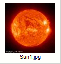
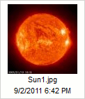

Przycisk Ustawienia (Settings) dost?pny w pasku narz?dzi CKFindera otwiera panel ustawie?, w kt籀rym mo髒na skonfigurowa? CKFindera i dostosowa? ustawienia programu do w?asnych potrzeb.
Poni髒szy rysunek prezentuje panel ustawie? CKFindera, kt籀ry otwiera si? po klikni?ciu przycisku paska narz?dzi.
Wszystkie ustawienia zapisywane s? automatycznie za pomoc? "cookies" przegl?darki internetowej. "Cookies" ("ciasteczka") to niewielkie pliki przechowuj?ce na Twoim komputerze prywatne ustawienia konfiguracyjne dla okre?lonych witryn internetowych.
W celu zamkni?cia (ukrycia) panelu ustawie? nale髒y nacisn?? przycisk Zamknij (Close) lub klikn?? ponownie przycisk Ustawienia na pasku narz?dzi.
Wszystkie opcje konfiguracyjne odnosz? si? do panelu plik籀w i kontroluj? spos籀b wy?wietlania plik籀w w CKFinderze. Panel plik籀w reaguje na wszelkie zmiany wprowadzone w panelu ustawie? natychmiast.
Ustawia tryb widoku panelu plik籀w:
Decyduje o ilo?ci informacji wy?wietlanych w panelu plik籀w. Nast?puj?ce opcje mog? by? w??czone lub wy??czone:
Je?li korzystasz z trybu wy?wietlania Miniaturki, mo髒esz odznaczy? wszystkie opcje. W widoku Listy nazwa pliku zawsze b?dzie wy?wietlana.
Poni髒szy rysunek prezentuje r籀髒ne opcje wy?wietlania w trybie Miniaturki.
|  |  |
 |
Ustawia porz?dek wy?wietlania plik籀w. Dost?pne s? nast?puj?ce opcje: